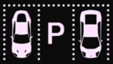
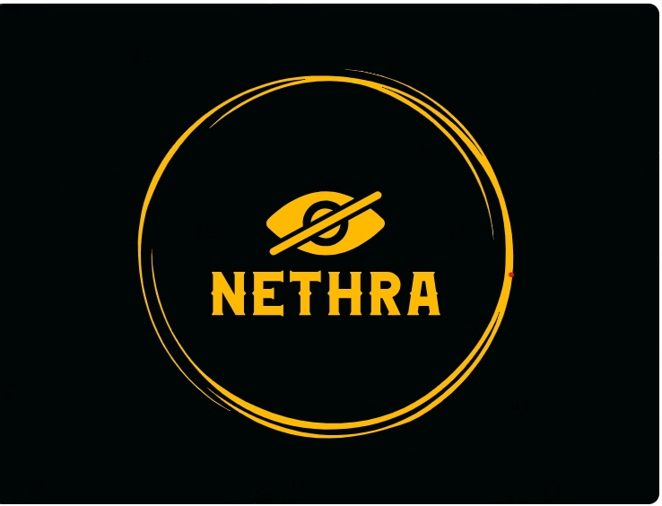
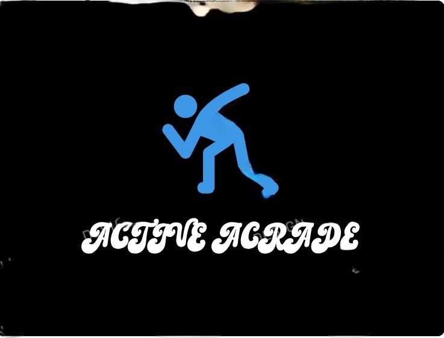
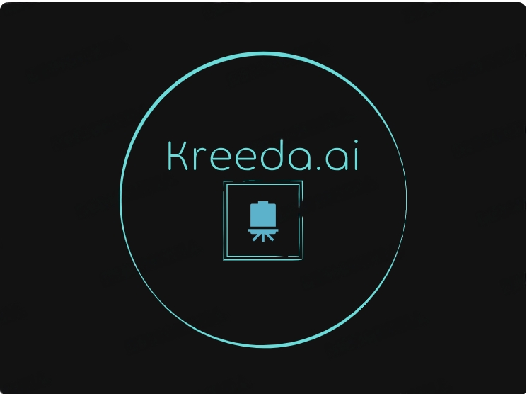

PARKSPOT
The parking detection app, merging Android and Flask, utilizes computer vision and a machine
learning model to provide real-time information on parking space availability. Seamless connectivity
facilitates efficient communication between the Android app and Flask server. The app captures live
video frames, processes them with OpenCV, and classifies parking spaces as empty or occupied.
Storing data in a CSV file allows for simplicity in smaller-scale projects, though future
enhancements might involve transitioning to a more robust database system for scalability. This
innovation reflects the transformative potential of technology in simplifying urban challenges and
enhancing the overall driving experience.
GO
to Github

NETHRA
The envisioned system seamlessly integrates depth sensing and computer vision to aid individuals
with visual impairments. Utilizing advanced depth-sensing hardware and OpenCV, the system accurately
measures distances and identifies individuals in real-time. Distances are converted to user-friendly
units, spoken through Python's Text-to-Speech (TTS), offering immediate feedback. A user-friendly
interface, employing speech or non-visual cues, enhances interaction. The system operates in
real-time, updating distance information dynamically. The provided Python code initializes the depth
sensor, captures frames, detects people, and delivers spoken feedback.
GO
to Github

ACTIVE ACRADE
Active Arcade is an immersive fitness game that leverages Python and computer vision to detect
player movements. In real-time, the system generates bubbles on the screen based on the player's
detected positions. The objective is for the player to physically touch the bubbles using their
hands, accumulating points throughout the dynamic 10-point game. The use of computer vision ensures
a responsive and interactive experience, fostering physical activity and engagement. Active Arcade
represents an innovative fusion of technology and fitness, providing an entertaining and energetic
gaming environment.
GO
to Github

KREEDA.AI
As a part of internship at IISC Bangalore, we're crafting a Django-based web suite for post-breast
cancer surgery recovery. This platform incorporates real-time body detection via Mediapipe to
establish exercise checkpoints, fostering a personalized and secure exercise routine with a clean
UI. Users can seamlessly track progress and receive immediate feedback on posture during workouts.
The platform, designed for device accessibility, integrates Django Channels for real-time features
while prioritizing data security and user privacy. This collaborative project, rooted in research
and development principles, aims to deliver an efficient and user-centric solution for post-surgery
recovery.
GO
to Github
Upastith
The Attendance Project, currently in the developmental stage, is a Django-based initiative slated
for completion in the next two months. This project addresses the streamlined management of
attendance records and assignments within educational contexts. Utilizing the Django framework, it
promises a user-friendly interface for ease of data input and retrieval. As development progresses,
features such as real-time attendance tracking, robust assignment management tools, and
comprehensive reporting functionalities will be seamlessly integrated.
GO
to Github
EMERGISYNC
The project entails creating a Django-Flutter smart ambulance management system. It detects
ambulances within 1.5 km of signal lights, optimizing traffic flow for their quick passage. The
Django backend includes GPS-based ambulance detection, real-time traffic management, and secure user
authentication. The Flutter front end offers a real-time dashboard for traffic authorities,
displaying current conditions and optimized routes. Key considerations involve legal compliance,
security, scalability, and community engagement. Continuous iteration is emphasized for ongoing
improvement.
GO
to Github

"Thank you all for your patient engagement in reviewing our projects. Your time is truly appreciated. Now, let's shift focus to the skills cultivated throughout this journey. Beyond the technical aspects, this final-year project has honed problem-solving, critical thinking, teamwork, and project management skills. These competencies are not just integral to our academic success but are poised to be valuable assets in our professional journeys. again, thank you for your time and attention as we transition into discussing the skills we've acquired."
Go To Skills =>